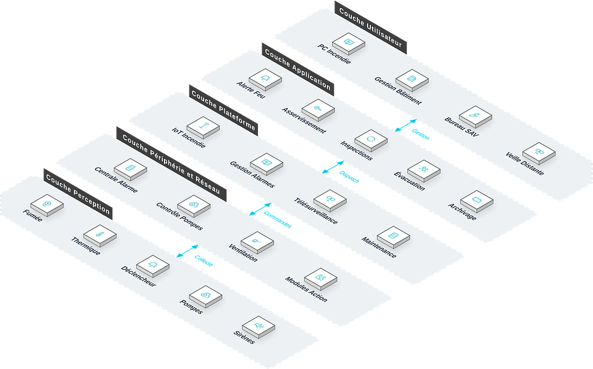

Pour les bâtiments commerciaux, résidences, usines, entrepôts logistiques, hôpitaux et écoles, une solution d'alarme incendie automatique et de contrôle intelligent en chaîne qui répond aux points de douleur clés que sont la détection tardive des départs de feu, la lenteur des liaisons et la difficulté de conformité, réalisant l'alerte précoce et la liaison intelligente sur toute la chaîne.
Vue d'ensemble
Fournit des solutions d'alarme incendie automatique et de contrôle intelligent en chaîne pour tous types de bâtiments, répondant à la détection tardive, aux liaisons désynchronisées et à la conformité difficile, et réalisant l'alerte précoce et la liaison intelligente sur toute la chaîne.
Applicable à : Bâtiments commerciaux, résidences, usines industrielles, entrepôts logistiques, hôpitaux, écoles.
- Détecteurs haute sensibilité pour l'alerte précoce des départs de feu
- Algorithmes intelligents réduisant le taux de fausses alarmes
- Forte capacité de contrôle en chaîne, exécution automatique des plans incendie
- Supervision en réseau, connexion aux plateformes urbaines de télésurveillance incendie
Bénéfices : Gagne un temps précieux pour l'évacuation, contient efficacement la propagation du feu, satisfait aux exigences de conformité incendie.
Défis Métier
Dans la gestion de la sécurité incendie des bâtiments, les clients font souvent face à une détection tardive, une réponse de liaison disjointe et des fausses alarmes fréquentes ; ils ont besoin d'un système d'alarme incendie automatique à alerte précoce, liaison intelligente et supervision de conformité simplifiée.
Détection tardive
Les rondes manuelles ne peuvent couvrir un bâtiment 24h/24 ; les feux naissants passent inaperçus.
Réponse de liaison disjointe
Après l'alarme, chaque sous-système incendie doit être lancé à la main, faisant perdre la meilleure fenêtre d'intervention.
Fausses alarmes fréquentes
Les détecteurs traditionnels réagissent à la poussière et à la vapeur ; le taux de fausses alertes nourrit l'habituation au risque.
Des dossiers de conformité longs à produire
Les registres de contrôle sont dispersés ; les vérifications administratives ne peuvent être documentées rapidement, ce qui accroît le risque de non-conformité et les coûts de reprise.
Retards de traitement, risque accru
Détection tardive, liaisons déconnectées et fausses alarmes font dépasser la fenêtre critique : le risque qu'un départ de feu s'aggrave est systématiquement amplifié.
Alerte précoce fiable
Une détection à haute sensibilité doublée d'algorithmes intelligents est nécessaire pour détecter tôt avec moins de fausses alertes.
Liaison automatique sur toute la chaîne
Après confirmation de l'alarme, sprinklers, désenfumage et diffusion d'évacuation doivent s'exécuter automatiquement.
Scénarios typiques :
Rôles concernés : Agents de sécurité incendie, responsables d'immeuble, directeurs sécurité, inspecteurs incendie.
Architecture
Système d'Alarme Incendie repose sur une topologie métier à cinq couches : PC Incendie, Gestion Bâtiment et autres bureaux utilisent les applications quotidiennes comme Alerte Feu et Asservissement, coordonnés par la couche plateforme ; les équipements de périphérie (Centrale Alarme, Contrôle Pompes) sur site raccordent les équipements de perception (Fumée, Thermique) : les données montent vers la plateforme et les commandes descendent jusqu'au terrain.

Disposition métier : la couche utilisateur regroupe les bureaux (PC Incendie, Gestion Bâtiment…) ; la couche application porte les fonctions quotidiennes ; la plateforme fournit IoT Incendie et Gestion Alarmes ; la couche périphérie et réseau situe les équipements sur site (Centrale Alarme, Contrôle Pompes…) ; les équipements de perception sont déployés sur Fumée, Thermique et le terrain.
Modules clés
Détection incendie
Détecteurs photoélectriques de fumée, de chaleur, de flamme et de gaz combustible combinés pour une découverte précoce.
Centralisateur d'alarme
Traitement des signaux et confirmation de zone ; les algorithmes intelligents réduisent les fausses alarmes.
Contrôle des liaisons
Le plan de réponse incendie complet s'exécute automatiquement après confirmation de l'alarme.
Gestion graphique
Le débit graphique affiche clairement les localisations d'incendie en un coup d'œil.
Supervision en réseau
Connexion aux plateformes municipales de télésurveillance incendie, avec des registres de contrôle numérisés.
Capacités d'intégration :
- Liaison avec les systèmes de sprinklers, désenfumage, rideaux coupe-feu, éclairage de secours, contrôle d'accès et sonorisation
- Connexion aux plateformes municipales de télésurveillance incendie
- Liaison avec les systèmes de gestion technique du bâtiment pour basculer en mode urgence en cas de feu
Avantages et livraison
Avec une détection à haute sensibilité et une liaison intelligente au cœur du dispositif, nous livrons des systèmes conformes aux normes internationales qui protègent le temps d'évacuation et la capacité de confinement, avec conception de la solution, installation et câblage, accompagnement à la réception incendie et contrôles périodiques.
Avantages différenciants
Alerte incendie précoce
Détecteurs haute sensibilité découvrent le feu au plus tôt, gagnant un temps précieux pour l'évacuation.
Algorithmes intelligents contre les fausses alarmes
Taux de fausses alarmes réduit : la confiance des opérateurs et la rapidité de réponse augmentent.
Exécution automatique des scénarios
Alarme confirmée, toute la chaîne de liaison s'exécute automatiquement.
Localisation graphique
Position de l'incendie affichée graphiquement : commandement clair, moyens dispatchés avec précision.
Liaison multi-systèmes
Relais avec sonorisation, contrôle d'accès, vidéosurveillance et éclairage de secours.
Conformité à la réglementation
Conception, travaux et réception conformes aux normes incendie, avec dossier complet.
Processus de mise en œuvre
Étude des besoins
Recenser les zones du bâtiment, niveaux de protection et besoins de liaison.
Conception
Implantation des détecteurs et logique de liaison.
Fourniture des équipements
Détection, contrôle et liaisons selon la liste de conception.
Installation et câblage
Installation sur site et bus d'alarme.
Mise en service
Tests par zone, tests de liaison et vérification des fausses alarmes.
Réception incendie
Accompagnement de la réception officielle avec dossier complet.
Formation et remise
Former les agents de sécurité incendie avant remise.
Garantie de service
Valeur client
Détection et alerte au plus tôt, temps d'évacuation gagné ; équipements de lutte pilotés automatiquement ; conformité incendie réduisant le risque juridique.